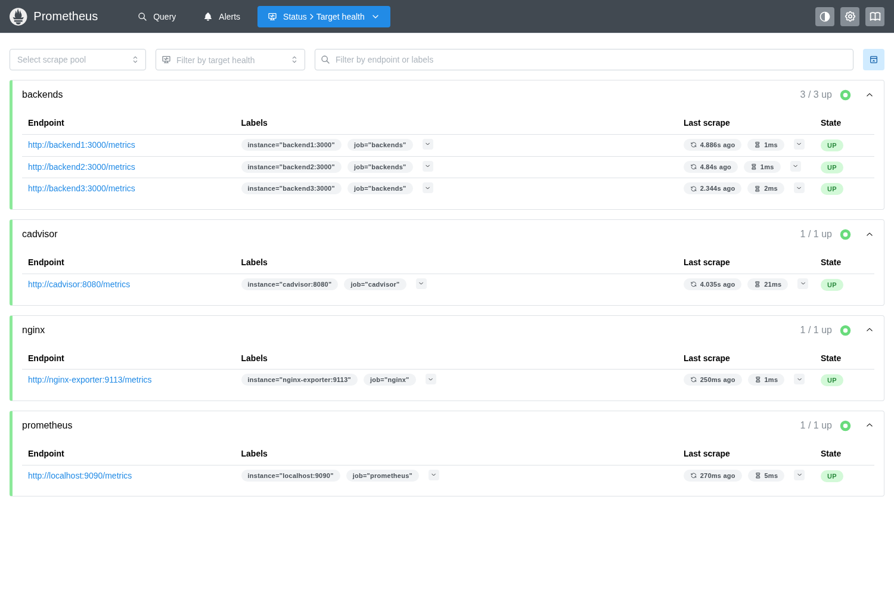
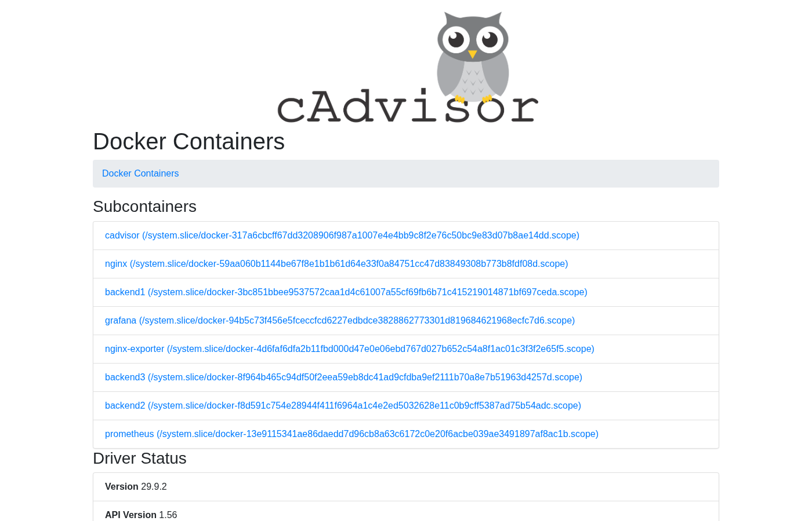
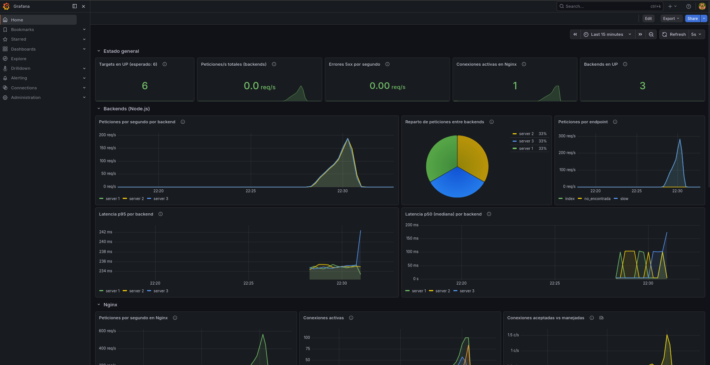
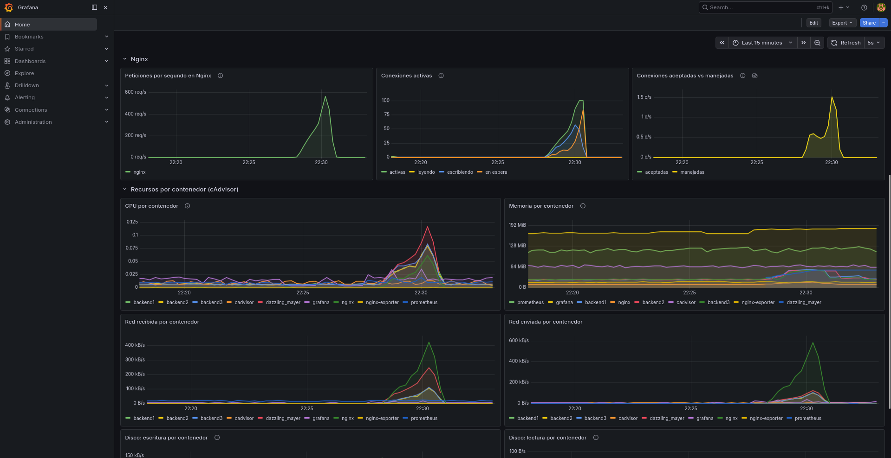
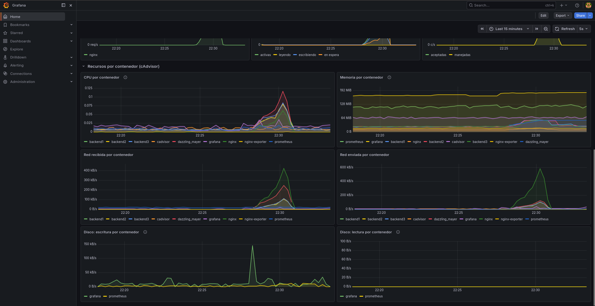
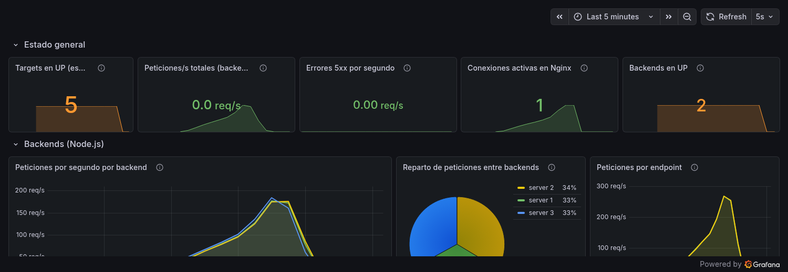

Universidad Autónoma de Occidente (UAO)
Administración de Sistemas Operativos
Infraestructura containerizada con balanceo de carga y monitoreo
Nginx · Node.js · Prometheus · Grafana · Nginx Prometheus Exporter · cAdvisor
Integrantes
Juan David Agudelo Diago
Cesar Andrés Díaz Jimenez
Andrés Felipe Medina Díaz
Noviembre de 2026
Repositorio:
https://github.com/andresdiazds3/ProyectoFinal-SO-
Video de presentación:
<PENDIENTE: pegar aquí el enlace del video>
Una tarea central de un administrador de sistemas operativos es crear entornos reproducibles para desarrollar y probar aplicaciones. Este proyecto implementa, mediante Docker y Docker Compose, una infraestructura completa que incluye un proxy inverso con balanceo de carga, varias instancias de una aplicación backend y una pila de observabilidad para medir su rendimiento.
Objetivos específicos
docker compose up -d --build) 8 contenedores interconectados por una red Docker personalizada./metrics.El sistema se compone de 8 contenedores en la red monitoring-net (bridge). Los contenedores se descubren por nombre gracias al DNS interno de Docker. Solo Nginx, Prometheus, Grafana y cAdvisor publican puertos al host; los backends y el exportador permanecen internos.
HOST (máquina física)
Navegador / curl / k6 ──► localhost:8080
Prometheus ► :9090 Grafana ► :3001 cAdvisor ► :8082
┌──────────────────── Red Docker: monitoring-net ──────────────────────┐
│ ┌──► backend1 :3000 ("server 1") ─┐ │
│ nginx:80 ─┼──► backend2 :3000 ("server 2") ─┼─ /metrics ◄─┐ │
│ │ └──► backend3 :3000 ("server 3") ─┘ │ scrape │
│ │ :8081/stub_status (solo interno) │ │
│ ▼ │ │
│ nginx-exporter :9113 ◄──────── scrape ────────── prometheus :9090 │
│ cadvisor :8080 ◄────────────── scrape ───────────────┘ ▲ │
│ PromQL │ │
│ grafana :3000 │
└──────────────────────────────────────────────────────────────────────┘
| Servicio | Imagen | Puerto (interno → host) | Función |
|---|---|---|---|
| backend1/2/3 | proyecto-backend:1.0 (construida localmente) | 3000 → no publicado | API Node.js + Express; se identifica como "server N" y expone /metrics |
| nginx | nginx:1.27-alpine | 80 → 8080; 8081 interno | Proxy inverso, balanceador round-robin y stub_status |
| nginx-exporter | nginx/nginx-prometheus-exporter:1.4.2 | 9113 → no publicado | Convierte stub_status en métricas Prometheus |
| cadvisor | ghcr.io/google/cadvisor:0.56.2 | 8080 → 8082 | CPU, memoria, red y disco por contenedor |
| prometheus | prom/prometheus:v3.13.5 | 9090 → 9090 | Recolección y almacenamiento de series de tiempo |
| grafana | grafana/grafana:12.4.0 | 3000 → 3001 | Visualización con datasource y dashboard aprovisionados |
Flujos de datos. (1) Tráfico de usuario: cliente → Nginx:80 → backend elegido por round-robin. (2) Métricas de aplicación: Prometheus consulta /metrics de cada backend directamente cada 5 s. (3) Métricas de Nginx: el exportador lee http://nginx:8081/stub_status y Prometheus lee al exportador. (4) Métricas de recursos: Prometheus lee a cAdvisor. (5) Visualización: Grafana ejecuta consultas PromQL contra Prometheus.
x-backend: &backend-base: plantilla compartida por los tres backends (build: ./backend, imagen proyecto-backend:1.0, pull_policy: build, restart: unless-stopped, red y expose: 3000). Cada backend la reutiliza con <<: *backend-base y solo define su container_name y su variable SERVER_NAME ("server 1", "server 2", "server 3"). Así se evita repetir configuración y los tres comparten exactamente la misma imagen.monitoring-net (driver bridge, con nombre fijo): permite que los servicios se resuelvan por nombre (backend1, nginx, prometheus…).prometheus_data y grafana_data: los datos sobreviven a docker compose down y solo se eliminan con down -v..env): los puertos del host y las credenciales de Grafana se leen con valores por defecto (${HOST_PORT_NGINX:-8080}, etc.). Si un puerto está ocupado, se cambia solo en .env. El archivo .env está en .gitignore y se versiona únicamente .env.example.| Servicio | Configuración destacada y razón |
|---|---|
| backend1-3 | expose en lugar de ports: solo se accede a través de Nginx, nunca directamente desde el host. El HEALTHCHECK del Dockerfile deja a cada contenedor en estado healthy. |
| nginx | Monta nginx.conf en solo lectura (:ro). depends_on con condition: service_healthy sobre los 3 backends, porque Nginx resuelve los nombres del upstream al arrancar y fallaría si aún no existen. |
| nginx-exporter | command: --nginx.scrape-uri=http://nginx:8081/stub_status. No publica puertos. |
| cadvisor | Monta /, /var/run, /sys y /var/lib/docker en solo lectura y usa privileged: true para leer los cgroups. Opciones --housekeeping_interval=5s (alineado al scrape de Prometheus) y --docker_only=true (solo contenedores Docker). |
| prometheus | Monta prometheus.yml (solo lectura) y el volumen prometheus_data en /prometheus; retención de 7 días (--storage.tsdb.retention.time=7d). |
| grafana | Volumen grafana_data; monta provisioning/ y dashboards/ en solo lectura; GF_USERS_ALLOW_SIGN_UP=false y GF_DASHBOARDS_DEFAULT_HOME_DASHBOARD_PATH para abrir directamente el dashboard del proyecto. |
Backends (healthy) → Nginx → nginx-exporter; cAdvisor; Prometheus (espera a backends, exporter y cAdvisor) → Grafana (espera a Prometheus). El arranque observado muestra exactamente esa secuencia.
FROM node:20-alpine # base ligera (~50 MB) WORKDIR /app COPY package*.json ./ # primero solo las dependencias (aprovecha caché de capas) RUN npm ci --omit=dev # instala exactamente lo del package-lock.json, sin devDependencies COPY app.js ./ ENV NODE_ENV=production PORT=3000 EXPOSE 3000 USER node # no se ejecuta como root HEALTHCHECK --interval=10s --timeout=3s --start-period=5s --retries=3 \ CMD wget -qO- http://localhost:3000/health || exit 1 CMD ["node", "app.js"]
package*.json y se instalan dependencias; mientras no cambien, las reconstrucciones no repiten npm ci.USER node evita ejecutar la aplicación con privilegios de root; app.disable('x-powered-by') oculta la tecnología del servidor./health cada 10 s; tras 3 fallos el contenedor pasa a unhealthy. Nginx depende de este estado.node_modules) del contexto de construcción.API en Node.js con Express y la librería oficial prom-client. Cada instancia recibe SERVER_NAME por variable de entorno, que aparece en las respuestas, en la cabecera X-Backend y como etiqueta backend de todas las métricas.
| Endpoint | Descripción |
|---|---|
GET / | HTML con Hello from server N y el hostname del contenedor. |
GET /health | {"status":"ok","server":"server N"}, usado por Docker. |
GET /headers | IP vista por el backend y cabeceras recibidas (X-Real-IP, X-Forwarded-For). |
GET /slow?ms=N | Responde tras N ms (por defecto 1000, máximo 30000); permite controlar la latencia en las pruebas. |
GET /metrics | Métricas en formato Prometheus. |
Un middleware mide cada petición y, al terminar la respuesta, registra el contador y el histograma. Se excluyen /health y /metrics para no contaminar las cifras con los chequeos de Docker y los scrapes de Prometheus, y la etiqueta endpoint se agrupa por ruta (index, slow, headers, no_encontrada) para no generar una serie por cada URL.
flask_http_request_total y flask_http_request_duration_seconds (los de prometheus-flask-exporter) para mantener compatibilidad con los dashboards y consultas de laboratorios previos del curso. El nombre es una convención; no implica que se use Flask.upstream backend_pool {
# memoria compartida entre workers
zone backend_pool 64k;
server backend1:3000;
server backend2:3000;
server backend3:3000;
}
Sin directiva adicional Nginx usa round-robin (1, 2, 3, 1, 2, 3…). Se añadió zone porque, con worker_processes auto (un worker por núcleo), cada worker lleva su propio turno si el estado no es compartido, y con pocas peticiones todas caían en el mismo backend. Con la zona compartida el reparto es exacto.
location = /metrics { return 404; }: /metrics no se expone por el proxy. Prometheus consulta cada backend directamente; si pasara por el balanceador, cada lectura caería en una instancia al azar y las cifras quedarían mezcladas.location / { proxy_pass http://backend_pool; … } con cabeceras Host, X-Real-IP, X-Forwarded-For y X-Forwarded-Proto para conservar la información original del cliente.proxy_next_upstream error timeout http_502 http_503 http_504 y proxy_connect_timeout 2s: si un backend falla, la petición se reintenta en otro nodo del pool (tolerancia a fallos).add_header X-Upstream-Addr $upstream_addr always: devuelve la IP:puerto del backend que atendió, útil para demostrar el balanceo con curl -I.log_format main incluye upstream, rt (tiempo total) y urt (tiempo del backend) para analizar el reparto en los logs.Un segundo bloque server { listen 8081; location = /stub_status { stub_status; access_log off; } } habilita el módulo stub_status. No se publica en el compose, por lo que solo es alcanzable dentro de monitoring-net; lo consume el nginx-prometheus-exporter.
Prometheus recolecta cada 5 s (scrape_interval: 5s) con 4 jobs que suman 6 targets:
| Job | Targets | Qué se mide |
|---|---|---|
prometheus | localhost:9090 | Prometheus se mide a sí mismo. |
backends | backend1:3000, backend2:3000, backend3:3000 | Peticiones, latencia y métricas de proceso de cada instancia. |
nginx | nginx-exporter:9113 | Conexiones y peticiones de Nginx (desde stub_status). |
cadvisor | cadvisor:8080 | CPU, memoria, red y disco por contenedor. |
El intervalo de 5 s se eligió para que los gráficos reaccionen rápido durante las demostraciones; en producción se usaría 15 s o más para reducir carga y almacenamiento.


Grafana no requiere configuración manual: provisioning/datasources/prometheus.yml crea el datasource Prometheus (uid fijo prometheus, http://prometheus:9090, por defecto y no editable) y provisioning/dashboards/dashboards.yml carga los JSON de grafana/dashboards/ en la carpeta "Proyecto Final". Así el dashboard "Proyecto Final - Infraestructura" aparece al iniciar y es reproducible desde el repositorio. Se verificó por la API de Grafana que el dashboard y el datasource existen.
| Métrica | Tipo | Uso |
|---|---|---|
flask_http_request_total{backend,method,status} | Counter | rate() → peticiones por segundo; filtrando status=~"5.." → errores. |
flask_http_request_duration_seconds{backend,endpoint,method,status} | Histogram (buckets 5 ms a 10 s) | histogram_quantile() → latencia p50 y p95. |
app_info{backend,server} | Gauge | Identifica la instancia. |
process_*, nodejs_* | Default metrics | CPU, memoria y event loop del proceso. |
nginx_connections_active/reading/writing/waiting, nginx_connections_accepted/handled, nginx_http_requests_total, nginx_up.container_cpu_usage_seconds_total, container_memory_working_set_bytes, container_network_receive/transmit_bytes_total, container_fs_reads/writes_bytes_total.| Sección | Panel | Consulta PromQL |
|---|---|---|
| Estado general | Targets en UP (esperado: 6) | sum(up) |
| Peticiones/s totales (backends) | sum(rate(flask_http_request_total[30s])) | |
| Errores 5xx por segundo | sum(rate(flask_http_request_total{status=~"5.."}[30s])) or vector(0) | |
| Conexiones activas en Nginx | nginx_connections_active | |
| Backends en UP | sum(up{job="backends"}) | |
| Backends (Node.js) | Peticiones por segundo por backend | sum by (backend) (rate(flask_http_request_total[30s])) |
| Reparto de peticiones entre backends | sum by (backend) (increase(flask_http_request_total[$__range])) | |
| Peticiones por endpoint | sum by (endpoint) (rate(flask_http_request_duration_seconds_count[30s])) | |
| Latencia p95 por backend | histogram_quantile(0.95, sum by (le, backend) (rate(…_bucket[30s]))) | |
| Latencia p50 por backend | histogram_quantile(0.50, …) | |
| Nginx | Peticiones por segundo en Nginx | rate(nginx_http_requests_total[30s]) |
| Conexiones activas / lectura | nginx_connections_active, nginx_connections_reading | |
| Conexiones aceptadas vs manejadas | rate(nginx_connections_accepted[30s]), rate(nginx_connections_handled[30s]) | |
| Recursos por contenedor (cAdvisor) | CPU por contenedor | sum by (name) (rate(container_cpu_usage_seconds_total{name!=""}[30s])) |
| Memoria por contenedor | container_memory_working_set_bytes{name!=""} | |
| Red recibida / enviada | rate(container_network_receive_bytes_total…), …transmit… | |
| Disco: escritura / lectura | rate(container_fs_writes_bytes_total…), …reads… |
Cubre los tres aspectos pedidos en la guía: latencia (p50/p95), tasa de solicitudes (por backend, por endpoint y en Nginx) y uso de recursos (CPU, memoria, red y disco).
Las siguientes capturas se tomaron con el rango "Last 15 minutes" y refresco de 5 s, durante la prueba de carga de la sección 9.3 (pico alrededor de las 22:30).



dazzling_mayer) es el contenedor temporal de k6 que generó la carga.Lectura de las gráficas.
/) es casi instantánea y la otra mitad (/slow) tarda 200 ms: el p50 cae justo en la frontera entre ambos grupos.docker --version y docker compose version); puertos 8080, 9090, 3001 y 8082 libres; k6 para las pruebas.git clone https://github.com/andresdiazds3/ProyectoFinal-SO-.git, cd ProyectoFinal-SO-, cp .env.example .env.docker compose up -d --build construye proyecto-backend:1.0 y levanta los 8 contenedores; docker compose ps confirma que los backends y cAdvisor están healthy../scripts/verificar.sh comprueba los 8 contenedores, la salud de los backends, el round-robin (9 peticiones), el 404 de /metrics en Nginx, la disponibilidad de Prometheus, Grafana y cAdvisor y los 6 targets en UP.grafana/k6 en Docker con --network host, de modo que el contenedor de k6 comparte la red del host y ataca http://localhost:8080 igual que lo haría k6 instalado localmente (ver sección 9.3).docker compose down (conserva volúmenes) o down -v (los elimina).El resultado de scripts/verificar.sh tras el despliegue fue:
1) Contenedores [OK] backend1, backend2, backend3, nginx, nginx-exporter, cadvisor, prometheus, grafana (running) 2) Salud backends [OK] backend1/2/3 healthy 3) Round-robin (9 pet.) Reparto: 3 server 1 · 3 server 2 · 3 server 3 [OK] 4) /metrics en proxy [OK] devuelve 404 5) Servicios web [OK] Prometheus, Grafana y cAdvisor responden 6) Targets Prometheus [OK] 6 targets en UP TODO BIEN.
Con for i in $(seq 1 9); do curl -s http://localhost:8080/ | grep -o 'server [0-9]'; done se obtiene la secuencia exacta server 1, 2, 3, 1, 2, 3, 1, 2, 3. Se usa curl y no el navegador porque este reutiliza la conexión TCP (keep-alive) y no muestra la rotación. Bajo carga el reparto sigue siendo uniforme (sección 9.3).
Escenario (loadtest/k6-load.js): 0→20 VUs (30 s), →50 (1 min), →100 (30 s), →0 (30 s); duración total 2 min 30 s. Cada iteración hace GET / y GET /slow?ms=200 y cuenta qué backend respondió. Umbrales: p(95) < 800 ms y errores < 1 %. Se ejecuta desde el host (--network host, sobre localhost:8080). Comando:
docker run --rm -i --user "$(id -u):$(id -g)" --network host \ -v "$PWD/loadtest:/scripts:ro" -v "$PWD/docs/resultados:/out" grafana/k6:1.0.0 \ run --summary-export=/out/k6-load-resumen.json /scripts/k6-load.js
| Métrica | Resultado |
|---|---|
| Peticiones HTTP totales | 40 576 (≈ 270 req/s) |
| Iteraciones | 20 288 (≈ 135 it/s) |
| Checks exitosos | 100 % (40 576 de 40 576) |
Errores (http_req_failed) | 0,00 % |
| Latencia media / mediana / máx. | 100,9 ms / 102,7 ms / 205,0 ms |
| Latencia p(90) / p(95) | 201,3 ms / 201,5 ms |
| VUs máximos | 100 |
| Umbrales | ✓ p(95) < 800 ms; ✓ errores < 1 % |
| Respuestas por backend | server 1: 6 751 · server 2: 6 830 · server 3: 6 707 |
Análisis. La latencia p95 (~201 ms) corresponde casi por completo a los 200 ms simulados en /slow, lo que indica que la infraestructura (Nginx + backends) añade una sobrecarga mínima incluso con 100 usuarios concurrentes. El reparto entre backends difiere menos de 2 % entre el que más y el que menos respondió, lo que confirma el round-robin bajo carga.
Sobre la mediana y los percentiles. Cada iteración hace dos peticiones de comportamiento muy distinto: GET / (casi instantánea, < 5 ms) y GET /slow?ms=200 (≈ 200 ms). Por eso las métricas globales mezclan dos grupos y la mediana (~103 ms) no es el tiempo típico de ninguna petición: como la mitad de las peticiones es muy rápida y la otra mitad lenta, el p50 cae justo en la frontera entre ambos grupos (no es un promedio de las dos peticiones). Por la misma razón el p95 solo describe a /slow; para analizar cada endpoint conviene filtrar por la etiqueta endpoint.
Por qué k6 (≈ 201 ms) y Grafana (≈ 234–242 ms) difieren. No es sobrecarga del sistema. k6 mide cada petición individualmente, mientras que Grafana usa histogram_quantile(), que solo conoce cuántas peticiones cayeron en cada bucket del histograma e interpola linealmente dentro del bucket donde cae el percentil. Todas las peticiones a /slow (≈ 200 ms) caen en el bucket de 100–250 ms, de modo que el p95 se interpola como 0,1 + 0,15 × (0,95 − 0,5) / 0,5 ≈ 0,235 s, que coincide con lo observado. Es un error de resolución del histograma (sobreestima), no una latencia real mayor. Se comprobó consultando Prometheus directamente: histogram_quantile(0.95, …) devolvió 0,235 s con todas las peticiones de /slow dentro del bucket 0,1–0,25 s.
Escenario (loadtest/k6-stress.js): 0→50 VUs, →150, →300 (cada 30 s) y descenso, contra /slow?ms=500 durante 2 minutos. Umbral: errores < 10 %.
| Métrica | Resultado |
|---|---|
| Peticiones totales | 30 054 (≈ 250 req/s) |
| Checks exitosos / errores | 100 % / 0,00 % |
| Latencia media / p(95) / máx. | 501,0 ms / 501,8 ms / 514,6 ms |
| VUs máximos | 300 |
| Umbral | ✓ errores < 10 % |
Análisis. Incluso con 300 usuarios simultáneos la latencia se mantuvo en ~501 ms, es decir, el tiempo simulado más ~1 ms, sin errores. Dado que Node.js atiende /slow con temporizadores asíncronos que no bloquean el event loop, y que 3 instancias reparten la carga, no se alcanzó el punto de saturación con este escenario; para encontrarlo habría que subir los VUs o usar un endpoint que consuma CPU.
Se lanzaron 600 peticiones a /slow?ms=100 con 10 clientes en paralelo y, a los 2 segundos, se ejecutó docker compose stop backend1.
| Observación | Resultado |
|---|---|
| Códigos HTTP de las 600 peticiones | 600 × 200; ningún 5xx (ver docs/resultados/tolerancia-codigos.txt) |
| Reparto con backend1 caído (9 peticiones) | server 2: 4 · server 3: 5 (el tráfico se redistribuye entre los nodos vivos) |
Tras docker compose start backend1 (+20 s) | server 1: 2 · server 2: 4 · server 3: 3 (el nodo se reincorpora al pool) |
Esto demuestra la alta disponibilidad básica: proxy_next_upstream reintenta en otro backend y el usuario no percibe la caída. En el dashboard, el panel "Backends en UP" pasa de 3 a 2 (y "Targets en UP" de 6 a 5) mientras dura la falla, como muestra la Figura 7.

backend1 detenido: "Backends en UP" = 2 y "Targets en UP" = 5; el panel de errores 5xx permanece en 0.Se ejecutó docker compose down (elimina contenedores y red, conserva volúmenes) y luego docker compose up -d. Los volúmenes proyecto-final_prometheus_data y proyecto-final_grafana_data siguieron existiendo; tras el reinicio Prometheus conservó el historial (más de 1 000 muestras del job nginx en las últimas 12 h, incluidas las anteriores al reinicio), Grafana mantuvo el dashboard y verificar.sh volvió a reportar los 6 targets en UP.
/metrics en Nginx (404) para que cada lectura corresponda a una instancia concreta y no se mezclen las cifras.zone. Sin memoria compartida, cada worker de Nginx mantenía su propio turno y con poco tráfico todas las peticiones iban al mismo backend. Con zone el reparto es exacto.depends_on: service_healthy. Nginx falla al arrancar si no puede resolver los backends; esperar al estado healthy garantiza un arranque ordenado..env. Evita conflictos en máquinas donde algún puerto está ocupado o reservado.:ro en los montajes. Reduce la superficie de ataque.--user. Al principio el resumen JSON no se podía escribir en el volumen por permisos (permission denied); se resolvió ejecutando el contenedor con el UID/GID del host.verificar.sh.docker compose --scale u orquestadores.
ProyectoFinal-SO-/
├── .env.example · .gitattributes · .gitignore · README.md
├── docker-compose.yml # 8 servicios, red y volúmenes
├── backend/ # Dockerfile, .dockerignore, app.js, package*.json
├── nginx/nginx.conf # proxy inverso, upstream y stub_status
├── prometheus/prometheus.yml # 6 targets cada 5 s
├── grafana/
│ ├── provisioning/{datasources,dashboards}/
│ └── dashboards/proyecto-final.json
├── loadtest/{k6-load.js,k6-stress.js}
├── scripts/verificar.sh
└── docs/
├── resultados/ # salidas de k6 y prueba de tolerancia
└── informe/ # este informe (HTML y PDF) e imágenes